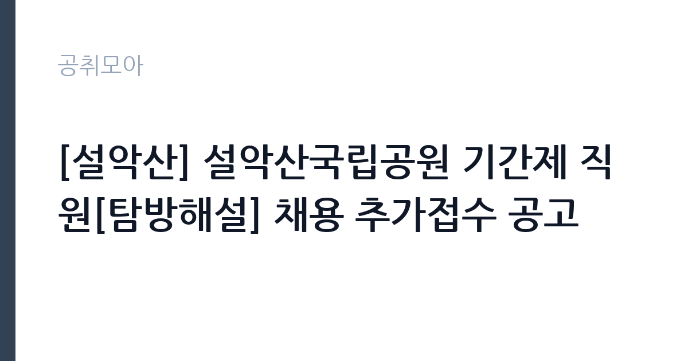

[공공기관] [설악산] 설악산국립공원 기간제 직원[탐방해설] 채용 추가접수 공고
국립공원공단 설악산국립공원사무소 · 강원 · 마감 2026-10-16 (D-6) · 출처 나라일터

한눈에 보는 모집 조건
| 기관 | 국립공원공단 설악산국립공원사무소 |
|---|---|
| 공고명 | [설악산] 설악산국립공원 기간제 직원[탐방해설] 채용 추가접수 공고 |
| 고용형태 | 기간제 |
| 근무지 | 강원 |
| 게시일 | 2026-10-08 |
| 마감일 | 2026-10-16 (D-6) |
지원자격, 이렇게 읽으세요
- 기간제[탐방해설] 1명
- 접수 ~2026-10-16 마감
- 세부 조건은 원문 공고문 확인
세부 응시 자격과 우대 조건, 직무 개요와 근무조건은 첨부파일의 공고문을 기준으로 확인하셔야 합니다. 국립공원 탐방해설 기간제 채용은 학력이나 경력에 큰 제한을 두지 않는 경우가 많으며, 숲해설가나 문화관광해설사 같은 관련 자격증 소지자를 우대하는 구조가 일반적입니다. 다만 이번 모집의 정확한 자격 기준은 원문에서 대조하십시오. 추가접수라는 점이 자격이 낮아졌다는 의미는 아니므로, 공고문에 적힌 필수 요건을 충족하는지가 먼저입니다. 우편과 방문 접수는 마감일 마감시간 내 도착분에 한하므로, 해당 방식으로 접수하시는 분께서는 배송 일정을 넉넉히 잡으시기 바랍니다. 온라인 접수는 국립공원공단 채용 시스템을 이용하시면 됩니다.
이 공고의 포인트
이 공고의 매력은 근무 기간의 길이와 근무지의 상징성에 있습니다. 2026년 10월 말부터 2027년 연말까지 이어지는 약 14개월 계약은 통상 수개월 단위인 국립공원 기간제 가운데 안정적인 편이며, 장기 현장 경험이 필요한 분께 알맞습니다. 한계산성분소가 있는 인제군은 설악산 내설악 권역의 관문으로, 단풍철과 겨울철 탐방 수요가 집중되는 현장입니다. 탐방해설 경력은 국립공원공단과 자연환경해설 분야로 진출할 때 직접적인 실적으로 인정받으며, 추가접수라 경쟁률이 낮게 형성될 가능성이 있습니다. 산을 좋아하고 사람 앞에 서서 이야기하는 일을 즐기시는 분께는 일과 삶의 만족을 함께 얻을 수 있는 자리입니다.
전형은 어떻게 진행되나
전형 일정이 공고문에 구체적으로 안내되어 있습니다. 공고와 접수는 2026년 10월 8일부터 10월 16일 18시까지이며, 서류전형 합격자 발표는 10월 19일, 면접전형과 최종합격자 발표는 10월 26일 예정입니다. 근무 시작일은 10월 29일로 예정되어 있습니다(출처: 나라일터 모집공고 발췌, 내부 사정에 따라 변경 가능). 서류전형에서는 자격 충족 여부와 해설 관련 경험, 근무지 근무 가능 여부를 평가하고, 면접전형에서는 해설 시연이나 현장 대응 능력을 확인하는 것이 일반적입니다. 접수 방법은 온라인 접수와 우편, 방문 접수이며, 우편과 방문 접수처는 강원 속초시 설악산로에 위치한 설악산국립공원사무소 행정과입니다. 일정이 촉박하게 이어지므로 합격자 발표일을 놓치지 않도록 챙기시기 바랍니다.
원문에서 확인한 전형 방식
설악산국립공원 기간제 직원 채용 추가접수 공고 국립공원공단 설악산국립공원사무소에서 근무할 기간제 직원을 채용하고자 아래와 같이 공고합니다. ※ 재공고사유: 지원자 미달로 인한 추가접수 ※ 기존공고: 제2026-41호 1. 채용분야: 기간제 직원[탐방해설] * 직무 개요 및 근무조건 관련 자세한 내용은 첨부파일(공고문)을 참고하시기 바랍니다. 2. 근무예정지 및 채용인원: 한계산성분소(강원 인제군), 1명 3. 근무기간: 2026. 10. 29. ~ 2027. 12. 31. 4. 전형일정 - 공고 및 접수: 2026. 10. 8.(목) ~ 10. 16.(금) 18:00 까지 - 서류전형 합격자 발표: 2026. 10. 19.(월) 예정 - 면접전형 및 최종합격자 발표: 2026. 10. 26.(월) 예정 - 근무시작일: 2026. 10. 29.(목) 예정 * 내부사정에 따라 변경될 수 있음 5. 접수방법 - 온라인 접수(https://knps.fairy.im/) - 우편 및 방문 접수(강원특별자치도 속초시 설악산로 833, 설악산국립공원사무소 행정과) - 마감일 마감시간 내 도착분에 한함 자세한 사항은 첨부 공고문을 참고하시기 바라며, 기타 채용 관련 사항은
이런 분께 추천해요
- 등산과 자연 관찰을 좋아하고 탐방객에게 설악산의 생태와 이야기를 전하는 일에 보람을 느끼실 분께 적합합니다.
- 숲해설이나 문화관광해설, 청소년 수련활동 지도 같은 해설과 교육 경험이 있는 분께 잘 맞는 자리입니다.
- 인제군 일대 근무와 교대, 휴일 근무가 가능한 분, 1년 이상의 장기 현장 경력을 쌓고 싶은 분께 권합니다.
지원 전 체크리스트
- 첨부파일 공고문에서 직무 개요와 근무조건, 우대 자격을 빠짐없이 확인하십시오.
- 온라인 접수처와 우편, 방문 접수처를 구분하고 마감 시각(10월 16일 18시)을 엄수하십시오.
- 서류전형 합격자 발표일(10월 19일)과 면접일(10월 26일)을 달력에 표시하고 연락처를 정확히 기재하십시오.
- 휴일과 공휴일 근무 가능 여부와 숙식, 통근 조건을 미리 따져본 뒤 지원하십시오.
모집 일정과 제출 타이밍
접수는 10월 16일 18시에 마감되며 서류전형 합격자 발표는 10월 19일, 면접과 최종합격자 발표는 10월 26일 예정입니다. 근무 시작일은 10월 29일로, 합격자 발표 후 사흘 만에 출근하는 빠듯한 일정이므로 미리 마음을 정해 두시는 편이 좋습니다. 단풍철 성수기를 앞둔 시점이라 인수인계가 간단히 끝날 수 있으니, 설악산 탐방로와 분소 위치, 탐방해설의 기본 흐름을 사전에 공부해 두시면 초반 적응에 도움이 됩니다. 내부 사정에 따라 일정이 변경될 수 있다고 안내되어 있으니 사무소 공지를 수시로 확인하십시오.
직무 이해하기: 공공기관
탐방해설 직원은 국립공원을 찾는 탐방객에게 자연과 역사문화를 해설하고 안전한 탐방을 돕는 역할을 맡습니다. 탐방로와 탐방지원센터에서 정기 해설 프로그램을 운영하고, 단체 탐방객의 안내와 질서 유지, 위험 구간 예찰과 안전 계도 같은 업무를 병행합니다. 설악산의 지형과 식생, 야생동물, 단풍과 적설 같은 계절 현안에 대한 지식을 탐방객의 눈높이에 맞춰 전달하는 것이 핵심이며, 어린이와 노약자를 배려한 해설 기법도 필요합니다. 공단 내규와 근무계획에 따라 휴일과 공휴일에 근무할 수 있고, 근무지는 여건에 따라 변경될 수 있다고 안내되어 있습니다. 자연과 사람을 함께 상대하는 현장 전문직의 성격을 지닙니다.
자기소개서 작성 팁
지원서에는 자연과 설악산에 얽힌 본인의 경험을 진솔하게 담으시는 편이 좋습니다. 등산 동호회 활동이나 숲해설 봉사, 생태 모니터링 참여 같은 이력이 있다면 구체적인 장소와 기간, 역할을 적어주십시오. 해설 업무는 지식을 나열하는 일이 아니라 탐방객의 호기심을 끌어내는 일이므로, 사람을 가르치거나 안내해 본 경험을 함께 드러내시면 좋습니다. 한계령과 대청봉, 계곡과 사찰로 이어지는 설악산의 이야기를 본인의 언어로 풀어낼 수 있다는 점을 보여주십시오. 장기 근무가 가능한 체력과 현장 적응력을 언급하시는 것도 좋은 평가 요소입니다.
면접 준비 포인트
면접에서는 해설 역량과 현장 대응력을 직접 확인하는 경우가 많습니다. 설악산의 대표 탐방 코스와 생태적 특징을 하나 정해 2분 분량의 해설 시연을 준비해 가시면 좋은 인상을 남기실 수 있습니다. 탐방객이 위험 구간에 들어서거나 민원이 발생했을 때의 대응 절차를 묻는 질문에는 안전을 최우선에 두는 원칙을 분명히 밝히십시오. 휴일 근무와 겨울철 현장 근무에 대한 의지를 묻는 질문도 예상되므로 솔직하고 긍정적인 답변을 준비하십시오. 국립공원의 보전 가치를 존중하는 태도를 보여주시는 편이 좋습니다.
급여·근무조건 읽는 법
보수 조건은 첨부파일 공고문의 근무조건 항목에서 확인하시기 바랍니다. 국립공원공단 기간제 직원의 보수는 공단 내규에 따라 정해지는 것이 일반적이며, 근무시간과 휴일 근무 수당, 4대 보험 적용 여부가 공고문에 안내됩니다. 원문에 구체적인 금액이 제시되어 있지 않다면 임의로 추측하지 마시고, 설악산국립공원사무소 행정과에 문의하시는 편이 정확합니다. 근무지가 인제군이라 원거리 지원자께서는 숙식 지원 여부와 통근 여건을 함께 확인하시기 바랍니다.
자주 묻는 질문
- 추가접수라는 것은 무슨 의미인가요?
지원자 미달로 접수 기간을 다시 연 것입니다. 선발 기준이 낮아졌다는 뜻은 아니지만, 경쟁률이 낮게 형성될 가능성이 있어 요건을 갖춘 분께는 기회가 될 수 있습니다. - 근무지와 근무 기간은 어떻게 되나요?
근무예정지는 강원 인제군의 한계산성분소이며 근무 기간은 2026년 10월 29일부터 2027년 12월 31일까지입니다. 근무 여건에 따라 근무지가 변경될 수 있다고 안내되어 있습니다. - 접수 방법에는 어떤 것이 있나요?
온라인 접수와 우편, 방문 접수를 함께 받습니다. 우편과 방문 접수는 마감일 마감시간 내 도착분에 한하므로 여유 있게 접수하시기 바랍니다.
함께 보면 좋은 공고
[공공기관] 2026년 제9회 동두천시 시설관리공단 기간제 근로자 채용 공고 — 마감 2026-10-14[공공기관] 2026년 4분기 1차 KDI 청년인턴 채용 공고(장애인 제한경쟁) — 마감 2026-10-22[공공기관] 2026년 4분기 1차 KDI 청년인턴 채용 공고 — 마감 2026-10-22출처: 나라일터 공개정보를 바탕으로 공취모아가 정리한 안내글입니다. 모집 조건·일정은 변경될 수 있으니 지원 전 반드시 원문 공고문을 확인하세요. 본 글은 정보 제공용이며 합격을 보장하지 않습니다.